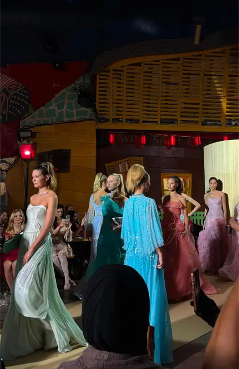
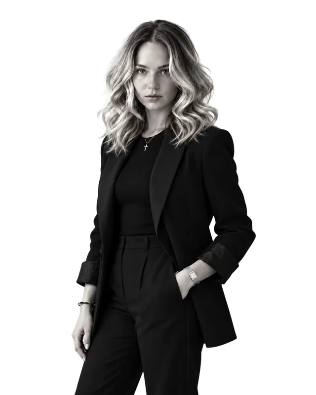
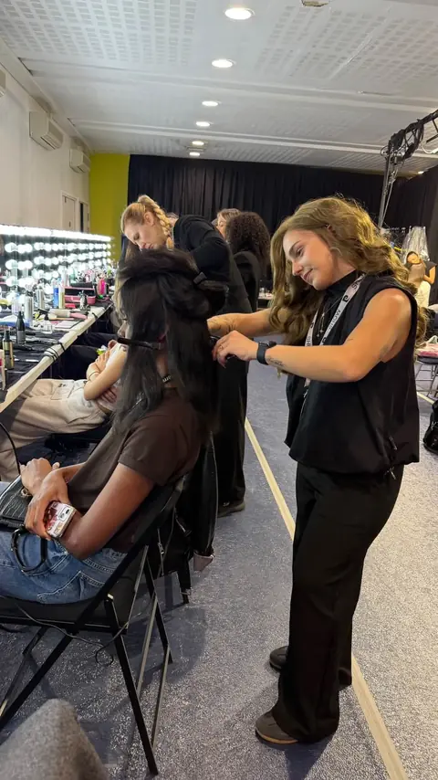
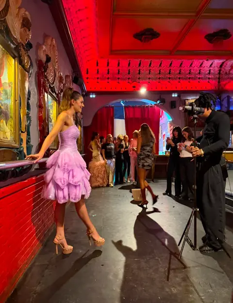
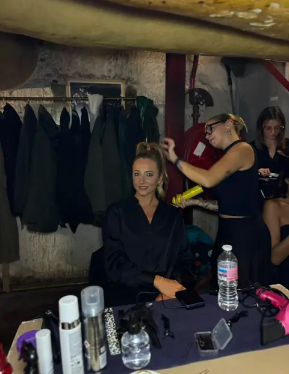

01Haute couture
Haute couture
& défilés
Créations capillaires pour podiums, défilés, Fashion Week et préparations backstage.
L’ALLURE EST UN ART
Coiffeuse styliste éditoriale & défilés,
basée à Paris.

01 / L’UNIVERS
DES COULISSES À LA LUMIÈRE
Avant le premier pas sur le podium,
il y a le regard, la matière et le geste.

RENCONTRES & EXPÉRIENCES
Créations capillaires pour défilés. Accompagner la silhouette et donner à la coiffure sa place dans la vision du créateur.
Une expérience dans l’univers des défilés de mode, au rythme des préparations et de l’énergie des coulisses.
Une immersion dans l’univers professionnel et événementiel de la coiffure, entre partage, rencontres et inspiration.
De nouvelles collaborations et créations. Une envie constante de rencontrer d’autres regards et de faire naître de nouvelles idées.
Imaginons la suite02 / COIFFURE DE DÉFILÉ & ÉDITORIALE
UNE VISION, PLUSIEURS EXPRESSIONS
Une coiffure ne se pense jamais seule.
Elle dialogue avec une silhouette,
une lumière, une personnalité.

Créations capillaires pour podiums, défilés, Fashion Week et préparations backstage.

Coiffures créatives pour shootings photo, campagnes, magazines et lookbooks.

Coiffures personnalisées pour projets artistiques, événements et collaborations créatives.
Le sens du détail. La liberté de créer.
03 / LE PORTFOLIO
FRAGMENTS D’UN UNIVERS
Des gestes en coulisses aux silhouettes
sur les podiums. Un carnet en images.
Découvrir les 5 films
14 photographies affichées
LE PORTFOLIO / 05 FILMS
De la préparation aux derniers pas sur le podium.
Cinq instants à découvrir en vidéo.
Le portfolio se construit au fil des rencontres. Écrivons la suite ensemble
04 / À PROPOS
LE REGARD DERRIÈRE LE GESTE
Talyana Rossignol, coiffeuse styliste à Paris.
Passionnée par l’univers de la coiffure et de la mode, je développe mon savoir-faire au contact des professionnels de la création, des défilés et des projets éditoriaux.
Basée à Paris, j’aime imaginer des coiffures qui révèlent une personnalité, accompagnent une silhouette et participent à la vision artistique d’un projet.
Des préparations en backstage aux créations pour les podiums, chaque collaboration est l’occasion de repousser les limites de ma créativité et de perfectionner mon art.
« Mettre la coiffure au service de la mode, de l’élégance et de l’expression artistique. »Faisons connaissance
PRÉPARER UNE COLLABORATION
Talyana propose des créations capillaires pour les défilés, les shootings photo éditoriaux, les campagnes, les lookbooks et les projets artistiques sur mesure. Retrouvez son univers dans les photos et films du portfolio.
Talyana est basée à Paris. Pour un projet dans une autre ville ou à l’international, précisez le lieu et les dates dans votre demande afin d’échanger sur les possibilités de déplacement.
Indiquez votre nom, votre société ou projet, la date, le lieu, le nombre de personnes à coiffer et la direction artistique souhaitée. Vous pouvez aussi préciser vos inspirations et votre budget prévisionnel.
Utilisez le formulaire de contact ou écrivez à rossignoltalyana12@gmail.com. Les demandes sont adressées à Talyana pour discuter du projet et de ses disponibilités.
05 / LA PROCHAINE HISTOIRE
PARIS & DÉPLACEMENTS INTERNATIONAUX
Vous êtes créateur, photographe, agence,
styliste ou directeur artistique ?
Échangeons autour de votre prochain projet.
Talyana RossignolHAIR STYLIST · PARIS